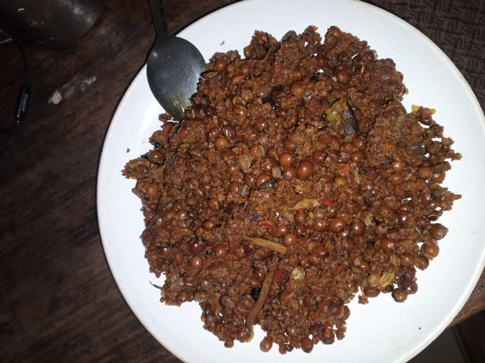

Recipe for Nigeria Meat Pie

Ingredients
For The dough
- 4 cups all-purpose flour (500 g)
- 1 tsp baking powder
- ½ tsp salt
- 250 g cold butter or margarine
- 1 large egg (for dough)
- ½ cup cold water
- 1 egg yolk (for egg wash)
For the Filling
- 300 g minced beef (about ¾ lb)
- 2 medium potatoes
- 1 medium carrot
- 1 medium onion
- 2 tbsp vegetable oil
- 1 tsp curry powder
- ½ tsp thyme
- 1 seasoning cube
- Salt & pepper to taste
- 2 tbsp flour (to thicken filling)
- ½ cup water or beef stock
Instructions
- Peel and dice the potatoes and carrots into very small cubes, finely chop the onions, and set them aside.
- Place a frying pan on medium heat, add two tablespoons of vegetable oil, and when it warms up, add the onions, stirring for about two minutes until they become soft and translucent.
- Add the minced beef, break it apart with a spoon, and cook until it changes from pink to brown, then season with curry powder, thyme, seasoning cube, salt, and pepper, stirring well to combine.
- Pour in the diced potatoes and carrots, stir to mix, then add half a cup of water or beef stock, cover the pan, and cook until the vegetables are tender.
- Sprinkle two tablespoons of flour over the mixture, stir until the sauce thickens and holds together, then remove from the heat and let it cool completely.
- In a large mixing bowl, combine the flour, baking powder, and salt, add the cold butter in chunks, and rub it in with your fingertips until the mixture looks like fine breadcrumbs.
- Beat one egg, pour it into the flour mixture, and gradually add cold water a little at a time until a soft dough forms, stopping before it becomes sticky.
- Wrap the dough in cling film, place it in the fridge, and chill for 30 minutes.
- Lightly dust your work surface with flour, roll the dough out to about a quarter-inch thickness, and cut circles about 4 to 6 inches wide.
- Place one or two spoonsful of the cooled filling in the center of each circle, fold over into a half-moon shape, and press the edges with a fork to seal.
- Arrange the pies on a greased baking tray, brush the tops with beaten egg yolk, and bake in a preheated oven at 180°C (350°F) for 25 to 30 minutes or until golden brown.
- Remove from the oven, let them cool slightly, and serve warm or at room temperature.
Food items and their images using relative file path
- Achicha

- Beans and Plaintain

- Dirty Rice

- Fufu and Bitterleaf soup

My Top 5 Movies & Book Using Absolute File Path From Online
- Gifted Hands
- Purple Hibiscus
- God Calling
- Abattoir
- Beauty in black